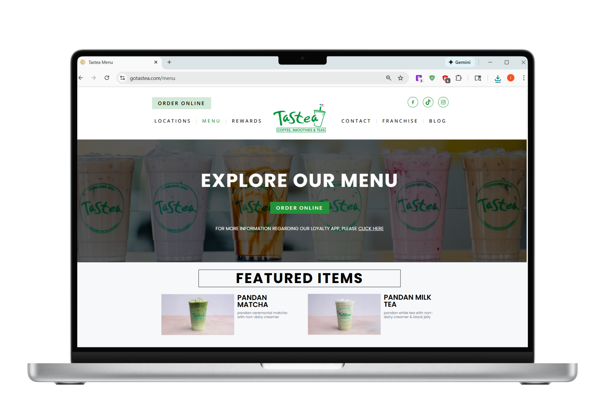
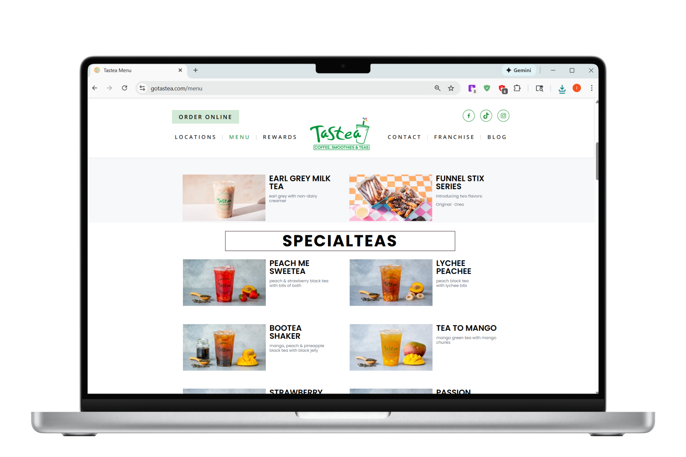
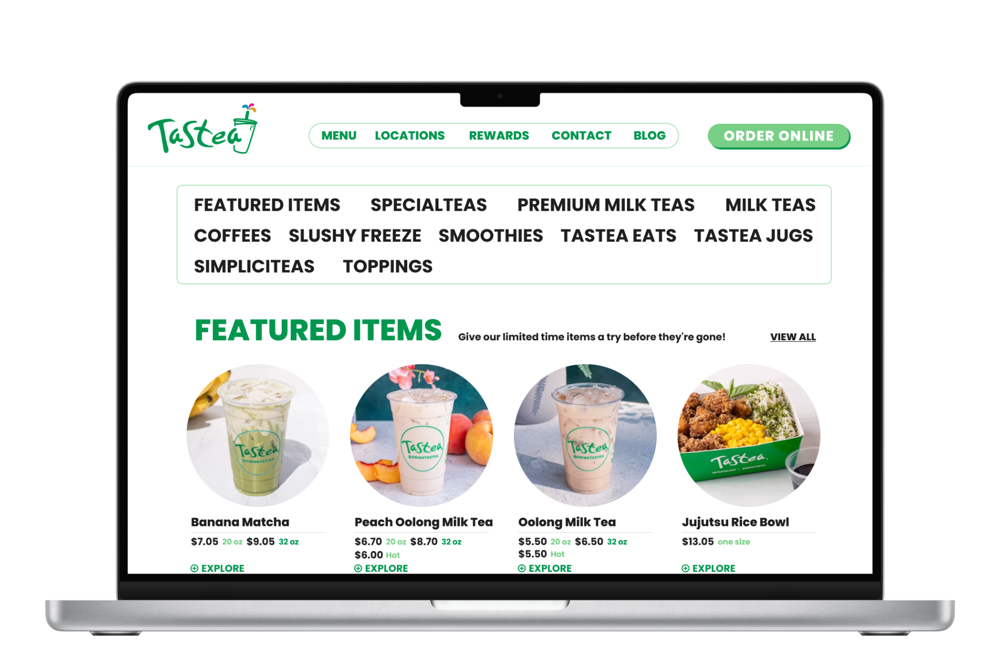
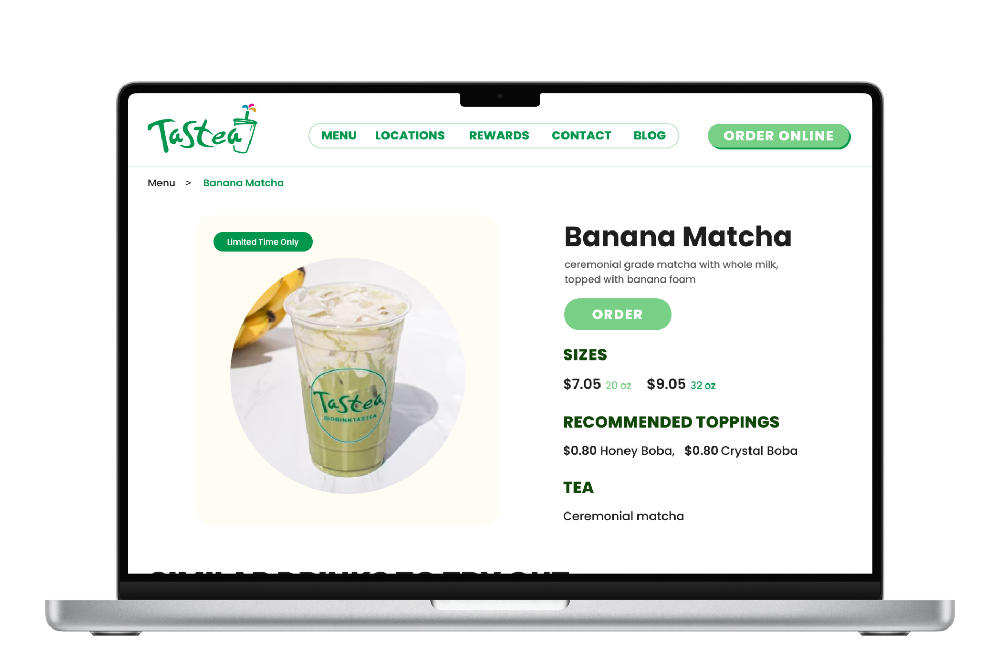

Overview
One cohesive look for Tastea
I reimagined Tastea's website by bringing its many different visual styles into one cleaner and more cohesive experience. The redesign focused on making the site easier to navigate and more visually consistent, while still preserving the playful and recognizable personality of the brand.
- Focus
- Tastea's website menu and ordering experience
- Output
- A redesigned menu with a sticky navigation bar
- Research
- A user questionnaire and a competitive analysis of three local boba shops
- Tools
- Figma and Feathery
Problem Statement
Delicious Drinks, Confusing Experience
I had always found Tastea's website frustrating to navigate because the experience felt visually outdated and unnecessarily difficult to use. The menu, arguably their biggest selling point, was especially counterintuitive, making it harder than it should have been for users to browse drinks and explore options.
Where the experience falls short
Visually outdated
The site feels dated next to other boba shop websites.
A counterintuitive menu
Their biggest selling point is hard to use.
Hard to browse
Exploring drinks and options takes more effort than it should.
Research and Pain Points
Users wanted a livelier, clearer menu
While I was aware of these issues from my own experience, I wasn't sure if other users felt the same way. To validate these concerns, a questionnaire was created to gather feedback and better understand the overall user experience.
User needs and challenges
The page is functional, but not engaging enough to encourage users to spend more time on it
Overall visual appeal is fair, but lacks excitement and personality
Menu access should be quicker, with clearer descriptions and pricing
The menu feels static and unengaging, relying heavily on black-and-white text and images
The website feels outdated compared to other modern boba shop websites
User highlights
Users like being able to slide through different images of the drink options
The site makes it easy for users to quickly find what they are looking for
What users want
Clear menu access
With drink images, descriptions, and visible pricing is essential.
Visual menus
With photos of drinks and food improve decision-making.
Customer favorites
Or “most ordered” sections help guide choices.
Easy and intuitive drink customization
Is highly valued.
Clear section titles
Help users quickly find what they’re looking for.
Competitive analysis
A competitive analysis followed on popular boba shops in the area, including Sunright, Summerfield Tea Bar, and Bopomofo Cafe. Analyzing these brands revealed their strengths, weaknesses, and key differentiators, such as menu variety, branding, and overall customer experience, which helped inform the design decisions moving forward.
Sunright
The strongest overall experience, with a clean UI, strong branding, and a visually engaging design. Drink images, descriptions, flavor profiles, and customer favorites make browsing enjoyable and informative. However, the top navigation can feel cluttered, and some sizing and scrolling inconsistencies appear throughout the site.
Bopomofo Café
Clean and easy to navigate, with a particularly well-designed online ordering page. While functional, the experience feels visually bland, with small buttons and an inconsistent menu that lacks images, descriptions, and customer favorites in some areas.
Summerfield Tea Bar
Clean and on brand, with easy access to the menu and included drink images. Minor usability issues include small text for prices and titles, missing drink descriptions, occasional navigation glitches, and excess unused space.
Design Features
Audience + Need
How might we streamline Tastea's ordering experience by creating a visually engaging, easy-to-navigate menu that allows thirsty customers to quickly find, customize, and order their drinks all in one place?
Goals
Update Tastea’s UI while staying on brand
Improve key UX gaps around menu navigation and ordering
Make the website more efficient and engaging
Users can find and order drinks more easily
Clearer, smoother overall experience
Design Highlights
Before vs After
Tastea's version
This is Tastea's original design. While visually clean, it lacks several key elements necessary for improving the user experience and streamlining the ordering process. Missing features include prices, customer favorite items, and size options. Additionally, the layout lacked a navigation bar, requiring excessive scrolling.


The redesign
The redesign addressed these issues by refining the layout to better align with the brand's visual identity. A sticky navigation menu bar helps customers quickly locate specific categories, smoothly scrolling users to the relevant section for a seamless experience.


Lessons Learned
Keep what works, and stay true to the brand
Consistency in branding: One of the biggest challenges was aligning the website with the brand's identity. Staying true to the brand's voice and visual aesthetics across all platforms helped make the website feel more cohesive and recognizable.
Preserving what works: Since the core website already functioned well, there wasn't a need for drastic changes, which made the design process a lot smoother. I learned to focus on preserving the aspects that are already working, while making thoughtful updates where necessary.
Interactive Prototype